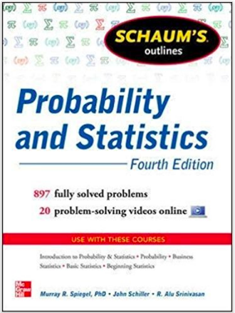

Probability & Statistics
Course: Math 460, Jan-Feb 2019
Time & Place:
-
Section 1
MonWed 5:30-9:30 (Room 212)
-
Section 2
TuTh 5:30-9:30 (Room 210)
Instructor: Dr. Jorge Basilio (jbasilio@scitech.edu)
Course Start and End Dates: January 7,2019 to February 8, 2019
Announcements
Extra Class Time! from 4:25-5:25 pm Wed/Thurs (Week 3)
On Wednesday, Jan 23, and Thursday, Jan 24, I will have extra review sessions from 4:25-5:25pm.
What will we cover?
We will go over the solutions to the practice midterm and any HW questions requested.
Hw #3 posted!
Hw3 is now posted and is due Wed/Thur of Week 3. It covers up to Inverse Norms from Class 4 Notes. Thursday class: If you want a head start, you can start reading the notes after tonight's class.
Review for Midterm
Click here for the Midterm Review problems.
Please ignore: Problems 6b, 8.
Extra Venn Diagram practice posted, click here.
Change of Schedule for Week 2
I will be travelling next week (week 2) and be gone from Wednesday to Friday so I will need to change the schedule a bit.
Section 2 (TueThr)
I am cancelling class on
Thursday, January 17. This way my Tue/Th section will have the same number of classes as my Mon/Wed class.
Section 1 (MonWed)
For my Mon/Wed class, YES we will have class but with a substitute.
Do not turn-in any ICAs or HWs to the sub. I will collect/accept them when I return.
Hw1 and Hw2 are now posted (Wednesday 11pm)
Hw1 corresponds to problems from Class 1 activities and Hw2 corresponds to problems from Class 2 activities.
Links to Cards and Roulette
Standard Deck of Cards
Roulette Wheel
Hello!
Welcome everyone to Probability & Statistics!
I'm excited to begin the new semester and to meet all of you.
I'll post important information here.
I posted the course syllabus below--for students who have not taken a course
with me please read it carefully.
| Week | Topics | Assessment |
|---|
|
1
|
- Ch 1
- Sets
- compliments
- unions
- intersections
- Probabilities
- Definitions/Properties
- Conditional Probabilty
- Counting Techniques
- Fundamental Principle of Counting
- Permutations
- Combinations
- Ch 5
- Organizing and Visualizing Data
- Frequency Distributions
- Relative Frequency Distributions
- Bar Graphs and Histograms
- Measurements of Central Tendency
- Mean, Median, Mode
- Five Number Summary & Box-Whisker Plot
- Measurements of Dispersion
- Standard Deviation & Variation
- Range
|
|
|
2
|
- Ch 2
- Random Variables
- Discrete Random Variables
- Continuous Random Variables
- Probability Distributions
- Ch 3
- Ch 4
- Probability Distribution Functions
- Binomial Distribution
- Empirical Rule
- Normal Distribution
- Standard Normal Distribution
- z-scores & using tables
- Probability Density Functions
- Poisson Distribution
- Inverse Norm
|
|
3
- (1/21 No class - MLK) & 1/22 (Class 4)
- 1/23 & 1/24
|
- Review for Midterm
- Midterm
|
|
|
4
|
- Ch 4
- More: Probability Distribution Functions
- Chi-Squared Distribution
- Student’s t Distribution
- F Distribution
- Ch 6 & 7
- Confidence Intervals
- Hypothesis Testing
- Level of Significance
|
|
|
5
|
- Review for Final Exam
- Final Exam
|
|
Course Policies
Please consult the Course Syllabus for a more detailed description.
What is this class?
This course introduces the elements of statistical analysis,
using an intuitive approach to the study of probability and probability distributions,
measures of central tendency and dispersion, sampling techniques, parametric
and nonparametric test of hypothesis,
point and interval estimation, linear regression, and correlation.
Applications to business, biological science and the social science are included.
Organization
We will be primarily using the book for all class work/homework; however, additional problems will be provided as needed. This module, we will be using this website as our primary source of information and materials.
The grades will be broken up into 3 denominations: Class work, Homework, and Exams. There will be a total of 4 homework assignments; all based on the in-class assignments. Homework (HW) assignments will be due the following week, while In-Class (IC) assignments, will be due the day of. There will be one midterm exam, held on the third week, and one final exam on the fifth week.
All HW assignments/grades (via codenames) will posted here.

Textbook
The textbook is
Schaum's Outlines: Probability & Statistics, 4th Ed., by Spiegel, Schiller, and Srinivasan.
You should read the relevant section(s) of the text before we cover the material in class, and then again while doing the homework.
Grading
The grade will be based on the following:
| In-class Assignments (ICA) | 5% |
| Homework | 10% |
| Midterm | 40% |
| Final Exam | 45% |
Exams
The in-class exams will take place on
- Midterm. Wednesday, 1/23/2019 or Thursday, 1/24/2019
- Final. Wednesday, 2/6/2019 or Thursday, 2/7/2019
Dates are subject to change.
The first 20 minutes will be reserved for Questions and Answers from students.
Calculator
We will use the Ti-83 heavily throughout the course.